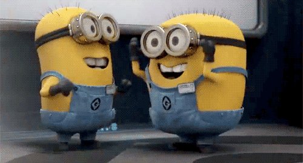

Pairing is Caring.
May 9, 2015
Man, let me start by just saying it’s crazy realizing that Week 5 of Phase 0 is coming to a close already. These past 5 weeks have been extremely fun and rewarding, so much in fact, that I’m torn because it makes me anxious to be on site as soon as possible but uneasy about leaving my friends and family within the next coming weeks. But really, it’s pretty hard to believe how quickly time has flown by. Doesn’t help having a diminishing savings account as a reminder either haha. But all’s good, cause it’s been helping me keep myself in check.
On the left, my bank account.
In the meantime, pair programming sessions have acted more or less as my crutch throughout this whole experience. I’m a people person, and I’m always eager to meet new people, but honestly, meeting people through pair programming sessions is a completely different experience. It kind of feels like you’re on a blind date sometimes, not that I would know, but well, you know. Sometimes you or your partner just end up developing nerves and end up not talking, and you’re left with that awkward silence.
When you wanna talk, but aren't sure if you can.
So far, I haven’t really come across any partner that has been “rigid”, and for that I’m really grateful. I really think I owe it to everyone’s willingness to let go of their pride and ego in order to be a partner who cares. On the other hand, I’ve struggled a bit in some cases where I’ve paired with partners who were just a bit behind on the learning competencies when we got down to pairing and working together. It’s not really their being behind that makes me feel uneasy, but the lack of questions when after I've explain things to catch them up on the material. It just makes you feel like your partner is a bit apathetic, like when you’re texting someone about plans and asking them, “Yo so I heard this place is really good, wanna go?”, and all you get is “Sure.” Granted, everyone’s busy and sometimes people just wanna get things done as quickly as possible and end up promising that they’ll read up on things later, but I honestly think and fear that that kind of mindset will only get us so far once we’re on site where we’ll probably be spending more time eating food for thought than actual food. So for the meantime, I think it’s okay for us to just do like minions do when we’re confused.
And oh, I revel in those moments when I’ve paired with someone and we’ve come up with a working solution where we don’t fully understand how or what we did. But it’s okay, progress is progress right?
Yes, that's how I react sometimes.
In addition to pairing, the whole feedback process we’ve been going through for Phase 0 has served as a foundation for our individual growth. So far, I think that I’m using the feedback to keep myself on top of the learning competencies by reading more when it’s optional, and also work on my team approach and communication little by little.
It’s scary sometimes, because sometimes you may think that you were jamming with your partner during your session, but when you go and check your recent feedback and see that your partner ended up pitching a curveball, you’re kind of just dumbstruck and like, “Wait…”
It was appropriate, again.
But on a more serious note, I’ve had great reviews overall which feels great, but to be honest, I appreciate feedback that open my eyes to something I can work on. It may seem harsh, rude, or whatever, but you can’t grow if you can’t take criticism. Naturally, I also think it’s important to spend time thinking about how to word constructive criticism, or should I say feedback since it’s kind of the euphemism for the word criticism, because “why speak up to put someone else down?" That’s a quote from a really awesome spoken word I listened to recently, I’ll share it on my Twitter later.
But man, writing feedback stresses me out sometimes man. Like, in an unhealthy way haha. I’m not typically the kind of person to be blunt, but I am the kind of person who can appreciate it when people are blunt and straightforward with me because at the end of the day, it’s just tough love. Speaking of tough love, you should watch Good Will Hunting if you haven’t already. It’ll show you the importance of being honest and laying the truth on your friends.
In the weeks to come, there’ll be a lot of things to keep in mind, but the following quotes reflect my current state of mind:
“If you want to go fast, go alone. If you want to go far, go together.”
Sometimes, you get impatient and want to just rush ahead towards the top to see the horizon, but the view’s much better when you’re able to enjoy it with friends.
“No man left behind.”
My motto since high school.
“Time isn’t something you have, it’s something you make.”

If you really care about something, you’ll make time of it. For me, those things are my family, friends (old and new), and my dreams and goals, in other words, myself. No matter how fast things are moving, things'll be okay if you make time for yourself and others.
With that said, here’s to 4 more weeks, and then another 9 until us Bumblebees are sitting in our seats buzzing about graduating on our Twitter feeds.